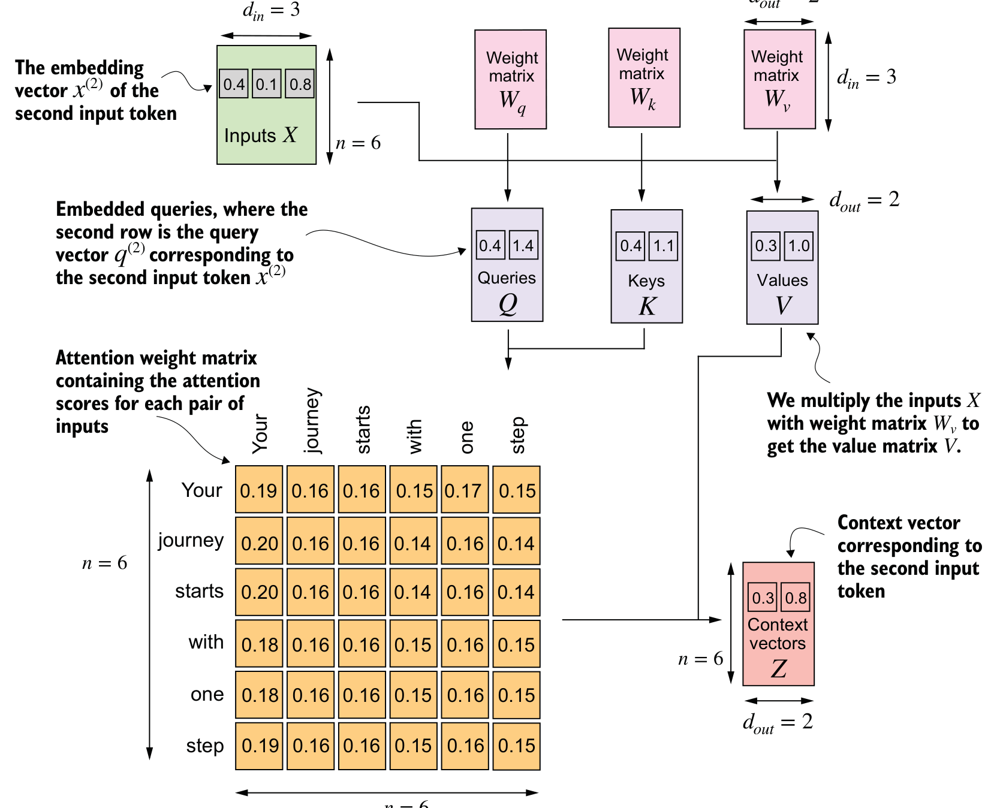
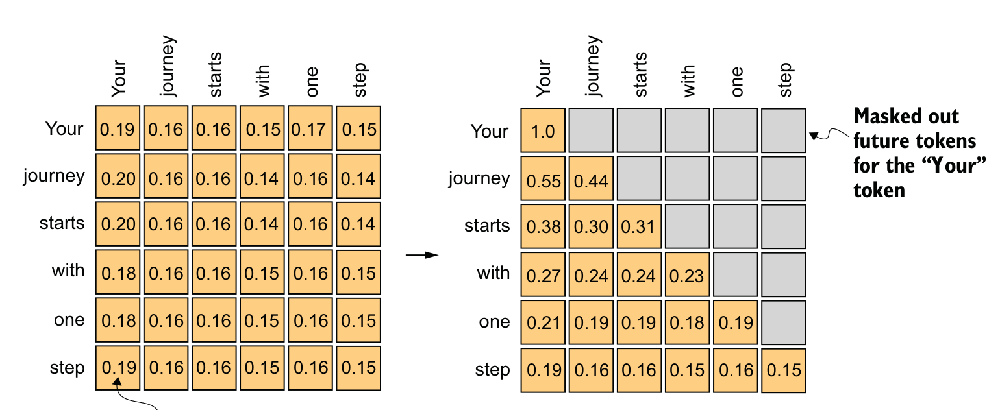
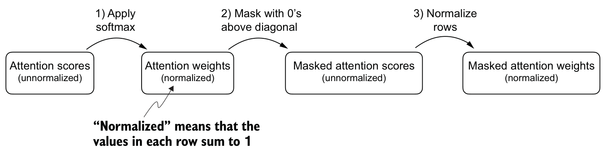
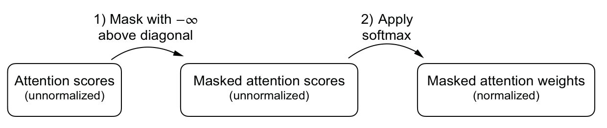
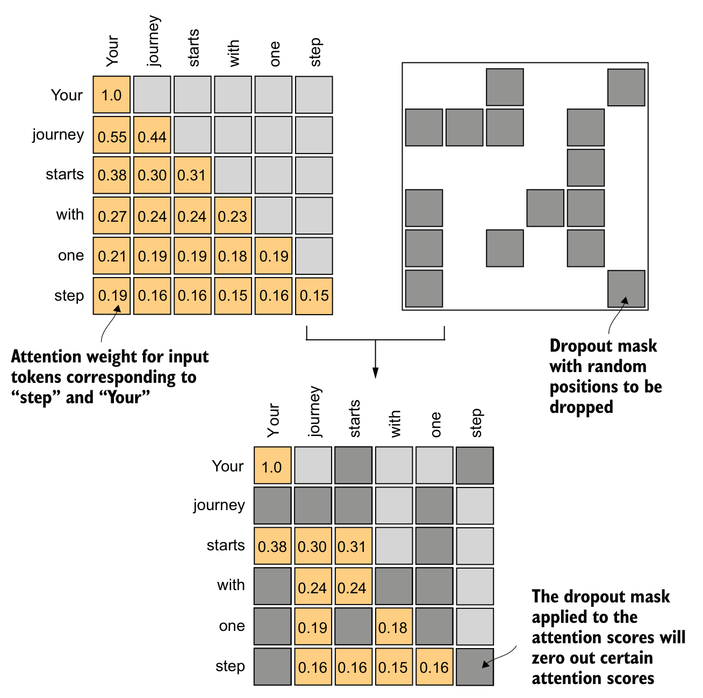
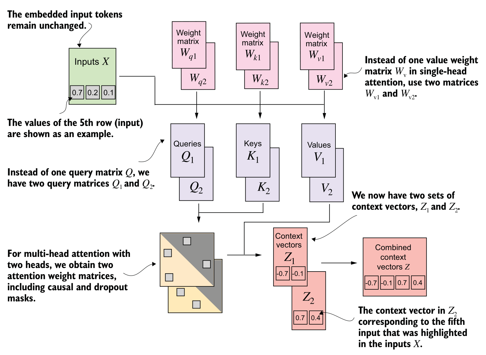
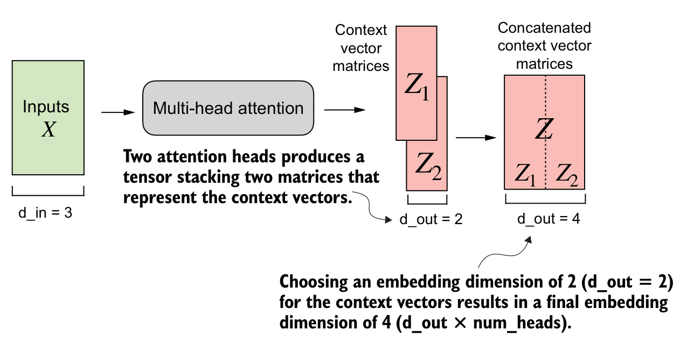
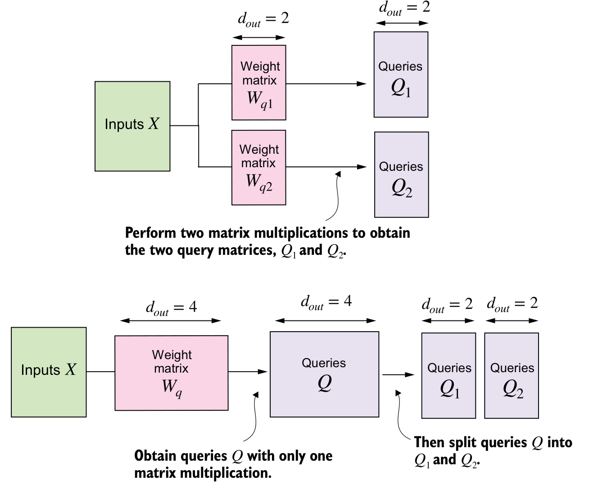

Outline
미래 정보 없이 문맥 벡터를 계산하는 attention 모듈을 완성한다.
| 학습 대상 | 확인할 결과 |
|---|---|
| 입력의 역할별 변환 | 같은 입력에서 비교용 벡터와 전달용 벡터를 계산한다. |
| 미래 위치 mask | 뒤 토큰을 바꾸어도 앞 위치 출력이 유지된다. |
| 학습 중 무작위 제거 | 한 번의 출력 합과 같은 입력의 반복 실행 평균을 구분한다. |
| 여러 계산 결과 결합 | 토큰 순서를 보존하며 여러 계산 결과를 합친다. |
고정 입력과 Q·K·V 변환
“나는 차를 마신다”를 세 토큰으로 정한 계산용 예제다. 행은 토큰, 열은 특징이며 float32를 사용한다.
| 토큰 입력 X | Q = XWQ | K = XWK | V = XWV |
|---|---|---|---|
| 나는 [1,0] | [1,0] | [1,1] | [1,2] |
| 차를 [0,1] | [0,1] | [0,1] | [3,0] |
| 마신다 [1,1] | [1,1] | [1,2] | [4,2] |
Q(Query)는 비교 요청, K(Key)는 비교 대상, V(Value)는 실제 전달 내용이다. 선형 변환은 입력 특징을 행렬로 섞는 연산이며, 여기의 W는 고정한 초기값이다. 실제 tokenizer 결과나 학습된 의미가 아니다.
입력 직접 비교와 학습 가능한 Q·K·V 변환
단순 self-attention은 Q=K=V=X로 놓았다. 가중합 원리는 유지하면서, 비교 기준과 전달 내용을 학습하도록 확장한다.
| 구분 | 변환 없는 attention | Q·K·V 변환이 있는 attention |
|---|---|---|
| 계산 | 점수 XXᵀ → softmax → X 가중합 | 점수 (XWQ)(XWK)ᵀ → softmax → XWV 가중합 |
| 비교 기준 | 입력 특징의 내적을 그대로 사용 | WQ·WK가 어떤 특징끼리 비교할지 학습 |
| 전달 내용 | 원래 입력 특징 X | WV가 전달할 특징을 학습 |
같은 둘째 토큰 [0,1]의 내적 점수
Q=K=X : [0,1] @ X.T → [0,1,1]
Q=XWQ, K=XWK → [1,1,2]앞 장표의 W를 사용한 값이다. 여기서는 softmax 이전의 내적만 비교한다.
왜 W를 세 개로 나누는가?
Q는 찾을 정보, K는 비교될 특징, V는 보낼 내용을 각각 바꿀 수 있다. 같은 W를 강제하면 이 세 역할의 변환도 묶인다.
W는 여러 입력에 공유되는 학습 파라미터다. Attention weights는 그 W와 현재 입력으로 매번 계산된다.
Q·K·V의 역할과 문맥 벡터
attention weights와 전달 내용을 분리한다. 그림은 X → 세 변환 → Q·K·V → attention weights → 문맥 벡터 순서다.

같은 X에서 Q와 K를 만들어 관련성을 비교하고, 그 attention weights로 V를 가중합한다. 그림의 weight matrix는 학습 파라미터, attention weights는 입력마다 계산되는 가중치이다.
attention weights 행렬의 행은 Query 위치, 열은 Key 위치다. 그림의 attention weights 숫자는 구조 설명용이며 실제 계산값이 아니다.
Query·Key가 attention weights을 만들고 Value가 출력 내용을 제공한다. 문맥 벡터는 다음 토큰 확률 자체가 아니다.
점수·스케일링·softmax
예제 파일의 q·k·v는 앞 장표의 Q·K·V다. 한 Query와 모든 Key를 비교한 뒤 마지막 축을 정규화한다.
scores = q @ k.T
a = torch.softmax(scores / 2**0.5, dim=-1)
z = a @ v@는 행렬곱, .T는 2차원 행렬의 전치다. dim=-1은 마지막 축인 Key 열을 뜻한다.
| 둘째 토큰의 계산 | 결과 |
|---|---|
| 내적 q₂·각 Key | [1,1,2] |
| √dₖ=√2로 나눔 | [0.7071,0.7071,1.4142] |
| attention weights | [0.2483,0.2483,0.5035] |
| V의 가중합 z₂ | [3.0070,1.5035] |
i는 Query 위치, j·r은 Key 위치다. s는 내적을 √dₖ로 나눈 점수다. attention weights의 열 j와 V의 행 j는 같은 토큰이어야 한다.
√dₖ 스케일링의 이유
dₖ는 Query·Key 벡터 하나의 특징 수다. 내적은 dₖ개 곱의 합이므로 특징 수가 커질수록 점수의 변동도 커진다.
분산은 값이 평균 주변에서 퍼진 정도다.
모든 qᵣ·kᵣ 성분이 서로 독립이고 각각 평균 0, 분산 1이면, 각 곱의 평균은 0·분산은 1이다.
상수 c로 나누면 분산은 c²로 나뉜다. dₖ로 나누면 분산은 1/dₖ로 작아진다.
같은 두 Key 점수의 softmax 비교 · dₖ=64
| 처리 | 점수 | attention weights |
|---|---|---|
| 스케일링 없음 | [0,8] | [0.0003,0.9997] |
| √64=8로 나눔 | [0,1] | [0.2689,0.7311] |
큰 점수 차이는 한 Key에 거의 전부 집중시킨다. 이때 softmax의 미분도 작아져 학습이 둔해질 수 있다.
이론의 독립·분산 가정은 설명용이다. 학습 중 분산이 항상 정확히 1이라는 보장은 없다.
nn.Linear의 저장값 복사 전후
projection은 앞서 사용한 선형 변환 XW다. 여기서는 직접 행렬곱으로 만든 K를 nn.Linear로 똑같이 재현한다.
layer = nn.Linear(2, 2, bias=False)
with torch.no_grad():
layer.weight.copy_(wk.T)
print(layer(x))Linear(2,2): 입력·출력 특징 수가 각각 2다. bias=False로 추가 덧셈을 생략한다.
no_grad()는 초기값 복사를 미분 기록에서 제외한다. copy_는 기존 파라미터의 저장값을 덮어쓰며 학습 가능 상태는 유지한다.
| 상태 | 저장 weight | layer(x) |
|---|---|---|
| 복사 전 | 무작위 초기값 | 우리가 정한 K와 일반적으로 다름 |
| wk 그대로 복사 | [[1,1],[0,1]] | [[1,0],[1,1],[2,1]] |
| wk.T 복사 | [[1,0],[1,1]] | [[1,1],[0,1],[1,2]] = K |
PyTorch의 저장 shape은 [출력, 입력]이다. layer(x)는 x @ weight.T를 계산한다.
학습 파라미터와 causal mask의 저장
W는 학습하는 값, attention weights는 입력별 계산값이다. Causal mask는 미래 위치를 표시한 고정 텐서다.
| 대상 | 역할·변경 시점 | 모듈에 보관하는 방식 |
|---|---|---|
| WQ·WK·WV | optimizer가 비교·전달 변환을 학습 | 학습 파라미터 |
| attention weights | 매 forward에서 입력으로 계산 | 해당 계산의 중간 결과 |
| causal mask | 미래 위치 규칙 유지, 입력 길이만 선택 | buffer로 등록한 고정 상태 |
self.register_buffer("mask", mask)
mask_now = self.mask[:t, :t]self는 현재 모듈이다. "mask"라는 이름으로 저장해 self.mask로 읽는다. [:t,:t]는 현재 토큰 수만큼 선택한다.
왜 register_buffer를 사용하는가?
단순히 self.mask = mask로 두면 일반 텐서는 m.to(device)의 자동 이동·state_dict() 저장 대상에서 빠진다.
등록하면 모델과 함께 장치를 옮기고 기본값으로 저장·복원한다. m.parameters()에는 포함되지 않아 optimizer가 학습하지 않는다.
다음 토큰 예측과 causal mask
앞 장표에서 buffer로 저장한 바로 그 causal mask다. Causal은 “미래 정보를 참조하지 않는다”는 규칙의 이름이다.
| 입력 위치 | 예측 목표 | 참조 가능한 입력 |
|---|---|---|
| 1: 나는 | 차를 | 나는 |
| 2: 차를 | 마신다 | 나는, 차를 |
| 3: 마신다 | 종료 토큰 | 세 토큰 모두 |
둘째 위치의 정답은 “마신다”다. 학습 때 셋째 입력을 읽으면 정답을 미리 보는 셈이다. 생성 시에도 아직 없는 미래 입력을 요구하게 된다.
현재 “차를”은 이미 아는 입력이므로 남긴다. 미래 “마신다”에 대한 attention weights만 0이어야 한다.

행: Query, 열: Key. 회색 위삼각은 mask 위치, 주황 대각선·아래는 참조 가능 위치다.
Causal mask의 실제 텐서와 적용 전후
True는 mask를 적용할 위치다. softmax 전에 해당 점수를 −∞로 바꾸면 attention weights가 0이 된다.
mask = torch.triu(
torch.ones(3, 3, dtype=torch.bool),
diagonal=1
)
# [[False, True, True ],
# [False, False, True ],
# [False, False, False]]
c = s.masked_fill(mask, -torch.inf).softmax(-1)ones: True 격자. triu(..., diagonal=1): 대각선 바로 위부터만 True를 남긴다. masked_fill: True 칸을 바꾼 새 텐서를 반환한다.
| 둘째 Query “차를” | Key: 나는, 차를, 마신다 |
|---|---|
| 스케일된 점수 s[1] | [0.7071, 0.7071, 1.4142] |
| mask[1] | [False, False, True] |
| masked_fill 이후 | [0.7071, 0.7071, −∞] |
| softmax 이후 c[1] | [0.5, 0.5, 0] |
t=2이면 왼쪽 위 2×2만 사용한다:[[False,True],[False,False]]
0으로 채우면 exp(0)=1이 남는다.
softmax([0,0])=[0.5,0.5],
softmax([0,−∞])=[1,0].
두 mask 적용 절차의 동등성과 결과
softmax 후 미래 attention weights을 지우면 행 합이 줄어든다. 남은 합으로 나누는 재정규화가 필요하다.

왼쪽부터 softmax → 미래 attention weights 0 → 행 합으로 나눔이다. 세 번째 상자의 scores는 여기서는 재정규화 전 attention weights이다.

미래 점수를 −∞로 바꾼 뒤 softmax를 적용하면 같은 결과를 얻는다. 아주 큰 미래 점수로 먼저 softmax가 포화되는 문제도 피한다.
Causal mask와 dropout의 역할
Dropout은 학습 중 attention weights 일부를 무작위 제거해 특정 연결에만 의존하는 것을 줄이는 방법이다.

주황은 남은 attention weights, 회색은 mask된 연결이다. 오른쪽 위 mask의 회색은 추가 제거 위치다.
Causal mask는 미래 위치 mask, dropout mask는 학습 중 무작위 제거다. 두 규칙은 서로 대체하지 않는다.
| attention weights [0.5,0.5,0], p=0.5 | 가능한 결과 |
|---|---|
| 앞 두 원소 모두 보존 | [1,1,0] |
| 첫 원소만 보존 | [1,0,0] |
| 앞 두 원소 모두 제거 | [0,0,0] |
p는 각 원소의 제거 확률이다. 정확히 절반을 지운다는 뜻은 아니다. 보존된 값은 1/(1−p)배 한다.
Dropout의 1/(1−p) 배율과 기대값
Causal mask → softmax에서는 행 합이 1이다. 그다음 dropout은 연결 의존을 줄이며, 매 실행의 행 합을 다시 1로 맞추지 않는다.
p=0.5이면 남은 값에 2를 곱한다.
| 고정 입력 c=[0.5,0.5,0] | 확률 | 결과 합 |
|---|---|---|
| [1,1,0] | 1/4 | 2 |
| [1,0,0] | 1/4 | 1 |
| [0,1,0] | 1/4 | 1 |
| [0,0,0] | 1/4 | 0 |
네 결과의 확률 가중 평균은 [0.5,0.5,0]이다. 배율 없이 지우기만 하면 [0.25,0.25,0]으로 줄어든다.
무엇을 반복하고 평균 내는가?
동일한 c를 고정하고 drop(c)를 새 무작위 mask로 여러 번 실행한다. 같은 위치의 출력끼리 평균 내면 원래 값 c에 가까워진다.
a는 한 attention weight, p는 제거 확률, E는 가능한 결과의 확률 가중 평균이다. 1/(1−p)는 남은 값에 곱해 기대값을 유지하는 배율이다.
학습·평가 모드에서의 dropout
학습에서는 무작위 mask를 새로 뽑고, 평가에서는 dropout을 끈다. Causal mask는 두 모드 모두 유지한다.
drop = nn.Dropout(0.5) # 제거 확률 p
drop.train() # 학습 모드
train_result = drop(c) # 매 호출 새 mask
drop.eval() # 평가 모드
eval_result = drop(c) # c 그대로예제의 둘째 행 c[1]=[0.5,0.5,0].
| 실행 | 가능한 둘째 행 |
|---|---|
| train 모드 | [1,0,0], [0,1,0], [1,1,0], [0,0,0] |
| eval 모드 | 항상 [0.5,0.5,0] |
train()·eval()은 실행 모드를 바꾼다. 파라미터를 학습하거나 기울기 기록을 끄는 함수는 아니다.
문장 묶음의 shape와 독립 계산
B는 문장 수, T는 토큰 수, Dᵢₙ은 입력 특징 수다. batch의 shape [B,T,Dᵢₙ]=[2,3,2]에서 B별 계산은 독립적이다.
batch = torch.stack((x, x), dim=0)
# x [3,2] 두 개 → batch [2,3,2]
q = batch @ wq # [2,3,2] @ [2,2]
k = batch @ wk # → 각각 [2,3,2]
k_t = k.transpose(-2, -1)
# [B,T,dₖ] → [B,dₖ,T] = [2,2,3]
scores = q @ k_t
# [2,3,2] @ [2,2,3] → [2,3,3]stack(...,dim=0)은 새 문장 축을 만든다. 예제는 같은 x를 두 번 쌓되, 다른 문장도 같은 방식으로 처리한다.
q[0] = [[1,0],[0,1],[1,1]]
k[0] = [[1,1],[0,1],[1,2]]
scores[0] = [[1,0,1],
[1,1,2],
[2,1,3]]scores[0,1,2]=2는 첫 문장의 둘째 Query와 셋째 Key 내적이다. 마지막 두 축은 “토큰·특징”에서 “Query·Key”로 바뀐다.
여러 head가 필요한 이유
단일 head는 한 Query에 대해 하나의 attention weights로 V를 섞는다. 여러 관계를 별도 결과로 남기기 위해 head를 병렬로 둔다.

X가 각 head의 변환으로 전달된다. 겹친 행렬은 서로 다른 head, Z₁·Z₂는 head별 출력이다.
“그는 컵을 들고 차를 마셨다”에서 주체와 음료 정보를 각각 참조할 수 있다. 한 가중합으로 섞기 전에 head별 결과를 따로 유지한다. 아래는 앞의 세 토큰으로 차이를 검산한 예제다.
| 둘째 토큰 | attention weights | 문맥 벡터 |
|---|---|---|
| head 1 | [0.5,0.5,0] | [2,1] |
| head 2 | [0.6698,0.3302,0] | [1.6605,1.3395] |
Head 2는 WQ의 열을 바꾸고 WK·WV는 같은 초기값으로 둔다. 두 head 모두 전체 허용 토큰을 보지만 attention weights와 출력이 다르다.
Head 출력의 연결과 전체 폭
[B,T,D]의 마지막 특징 축 D를 따라 연결한다. 같은 문장·같은 토큰의 head별 출력 [dₕ]를 합쳐 D=H×dₕ로 만든다.

X → 두 head의 Z₁·Z₂ → 같은 토큰의 특징 열을 연결한 Z 순서다.
joined = torch.cat((z1, z2), dim=-1)
# (2,3,2) + (2,3,2) -> (2,3,4)cat은 기존 마지막 축을 늘린다. 새 축을 만드는 stack과 다르다. B=2·T=3은 유지하고 D만 2+2=4가 된다. 원래 입력을 자르는 것이 아니라 변환 후 head별 출력 특징을 연결한다.
Projection의 의미와 head별 계산 통합
Projection은 학습 행렬을 곱해 특징을 바꾸는 선형 변환이다. 앞의 Q=XWQ와 nn.Linear가 같은 개념이며, 여기서는 2차원 입력을 4차원 Q로 바꾼다.

X: [B,T,2] → X @ WQ: [B,T,4]
WQ = [[1,0,0,1],
[0,1,1,0]]
[0,1] @ WQ = [0,1 | 1,0]
head 1 head 2각 head는 입력 특징 2개를 모두 사용한다. 변환 결과 D=4를 H=2개로 나눈다. K·V도 별도 행렬로 변환한다.
dₕ=D/H: 4/2=2, 4/4=1.
5/2는 정수 분할이 안 돼 오류다.
위: head마다 XWQ₁·XWQ₂. 아래: WQ=[WQ₁ | WQ₂]로 한 번 계산 후 결과 특징을 분할한다.
토큰 수와 attention 점수 개수
한 head에서 토큰마다 Query 하나와 Key 하나를 만든다. Query T개를 각각 Key T개와 비교하면 점수는 T×T개다.
문장 하나·head 하나에서 비교할 쌍
| 입력 길이 | Query × Key | 점수 개수 |
|---|---|---|
| 토큰 3개 | 3 × 3 | 9개 |
| 토큰 6개 | 6 × 6 | 36개 |
토큰 수가 두 배이면 Query도 두 배, 각 Query가 비교할 Key도 두 배다.
2 × 2 = 4배의 점수를 계산한다.
앞의 예제처럼 문장 2개·head 2개
| 세는 대상 | T=3 | T=6 |
|---|---|---|
| 전체 점수 개수 | 2×2×9 = 36 | 2×2×36 = 144 |
| 점수 저장 공간 float32: 값당 4바이트 | 144바이트 | 576바이트 |
| 내적의 곱셈 횟수 특징 2개: 점수당 2회 | 72회 | 288회 |
앞에서 배운 순서는 모든 점수 계산 → 미래 위치에 mask → softmax다. 미래 attention weights가 0이어도 이미 계산한 점수의 개수는 줄지 않는다.
Summary
Q·K·V 변환, causal mask, dropout, 여러 head의 역할을 구분한다.
| 구성요소 | 확인한 결과 |
|---|---|
| Q·K·V projection | attention weights와 전달 내용을 분리한다. |
| Causal mask | 둘째 attention weights [0.5,0.5,0], 문맥 벡터 [2,1] |
| Dropout | 학습 중 attention weights를 무작위 제거하고 같은 입력을 여러 번 실행한 출력의 기대값을 유지한다. |
| Multi-head attention | (2,3,2) 입력을 토큰 순서가 유지된 (2,3,4) 출력으로 바꾼다. |
토큰 수가 두 배이면 Query–Key 쌍은 네 배다. 모든 점수를 계산·저장할 때 필요한 곱셈과 점수 저장 공간도 네 배로 늘어난다.